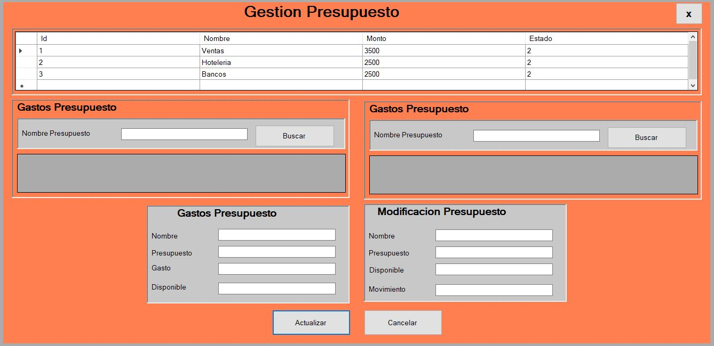
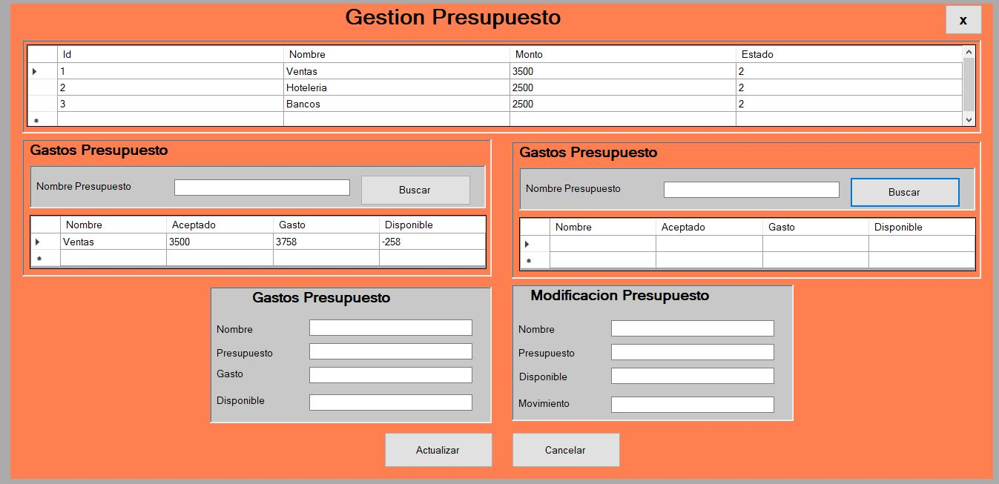
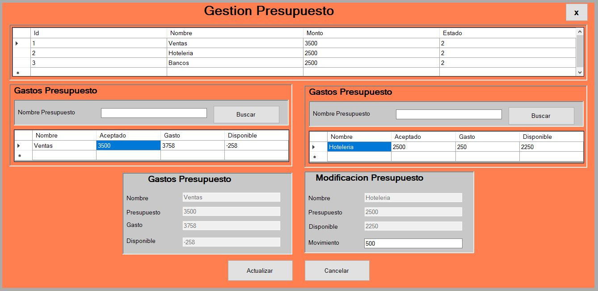
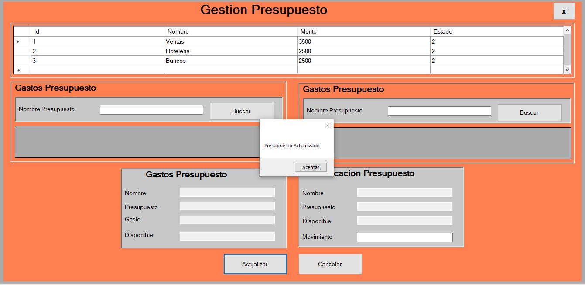

Gestion Presupuestaria
1. Al ingresar al Formulario Gestion Presupuestaria:

2. Se pueden visualizar todos los presupuestos auotorizados, al poder ver todos los presupuestos, se ingresa los nombres de los presupuestos en los buscadores para realizar la gestion de traslado de un presupuesto a otro.

3. Al ingresar los nombres de los presupuestos en los buscadores se llenaron los campos con los datos del presupuesto buscado,en la casilla llamada movimiento se debe ingresar la cantidad que se desea trasladar de un presupuesto a otro para que es positivo el saldo.

4. Al realizarlo se da click en el boton Actualizar y el aparacera el mensaje que el presupuesto se actualizo.
